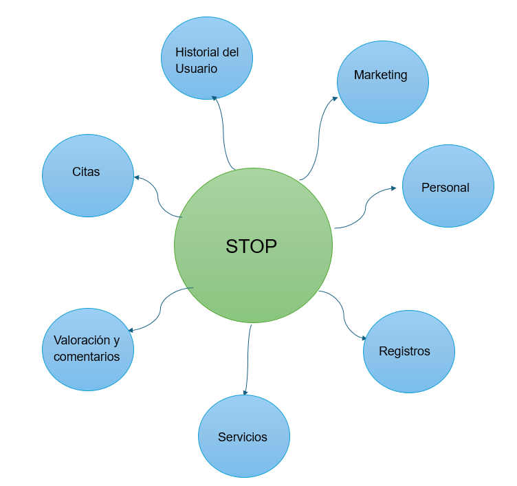
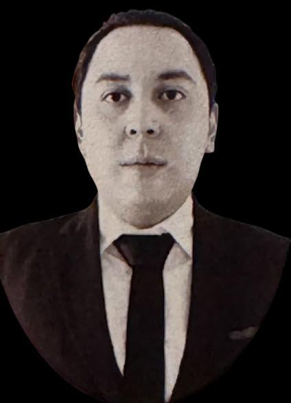
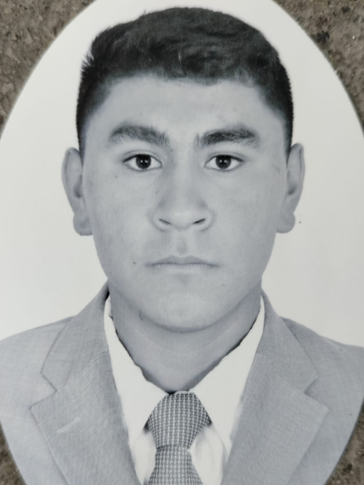

STOP es un sistema creado en Instituto Tecnológico Superior del Occidente del Estado de Hidalgo (ITSOEH) destinado a modernizar el acceso a los trámites presidenciales mediante el desarrollo de un software integral
La problemática es la dificultad significativa que experimentan los ciudadanos al intentar acceder a los servicios gubernamentales. Actualmente, muchos trámites son excesivamente lentos y complicados, lo que resulta en tiempos de espera prolongados y procesos que carecen de claridad. Esta situación genera frustración y descontento entre los ciudadanos.
El objetivo del proyecto STOP es crear una plataforma web que optimice los trámites presidenciales, reduciendo tiempos de espera y mejorando la eficiencia de los procesos, para ofrecer a los ciudadanos un acceso rápido y claro.
Se fragmento todo el proyecto en subsistemas ya que creemos que de está manera es más fácil y eficiente para trabajar en el proyecto ayudandonos a mejorar la gestión y organización, que permitira manejar cada área de manera más eficiente.
|  | |
|
 |
| Pedro Lopez Flores | Angel Dayan Euroza Mera | Cristan Jesus Aguilar Jimenez | Brayan Angeles Dorantes |
| 22011939@itsoeh.edu.mx | 220110129@itsoeh.edu.mx | 22011476@itsoeh.edu.mx | 22011934@itsoeh.edu.mx |